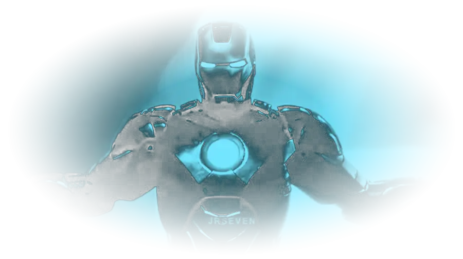
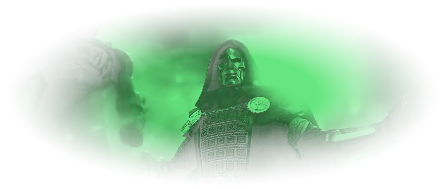
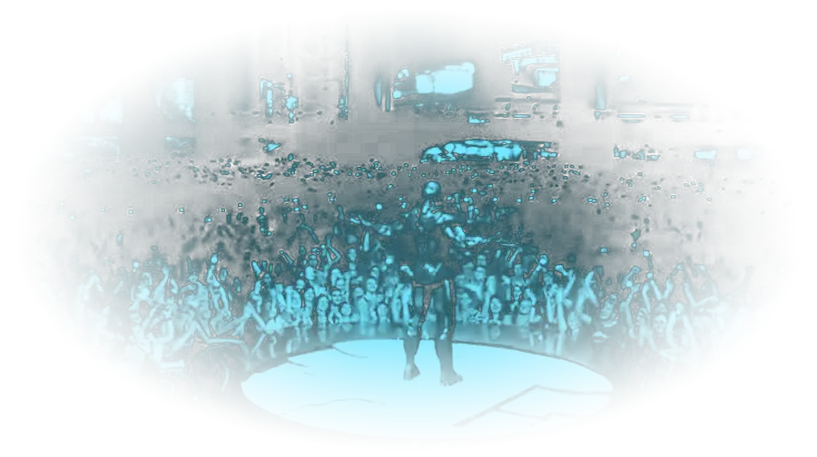
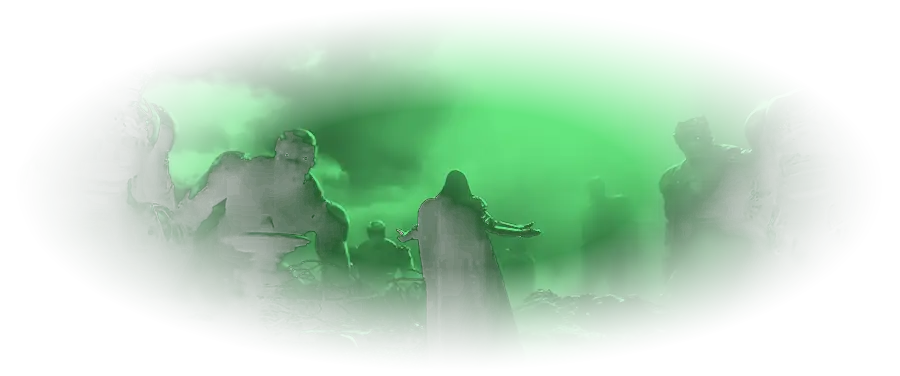
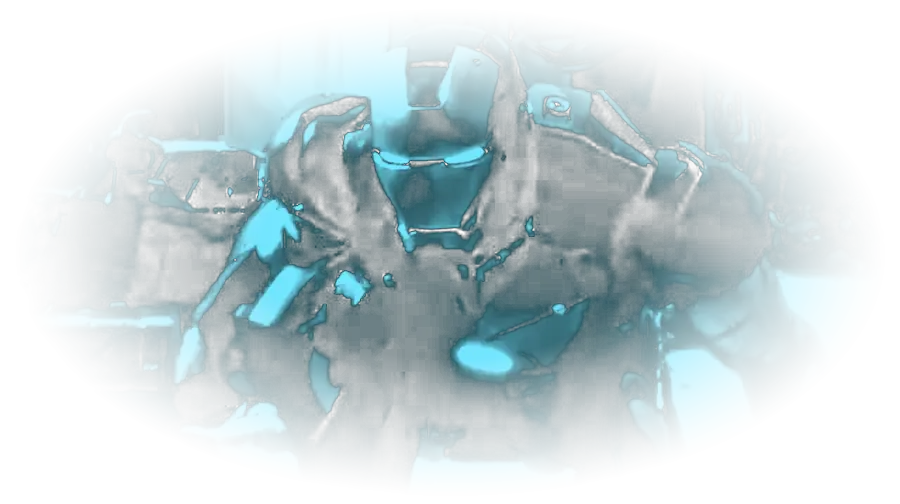
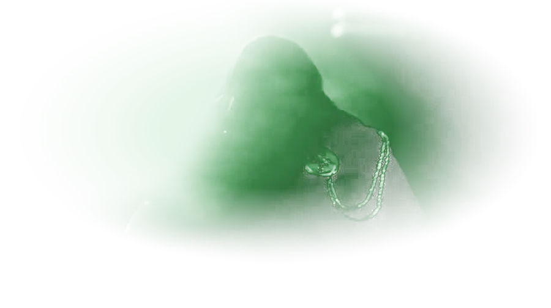
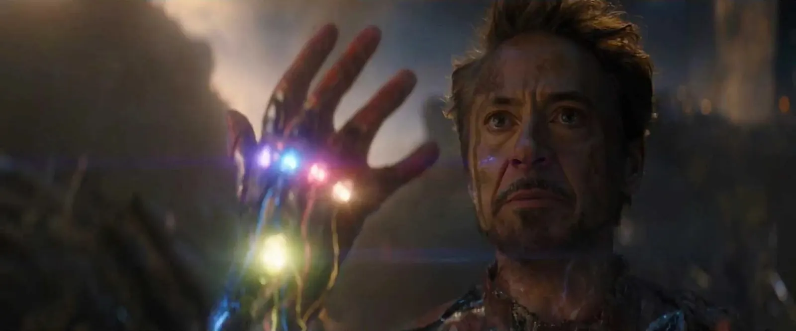
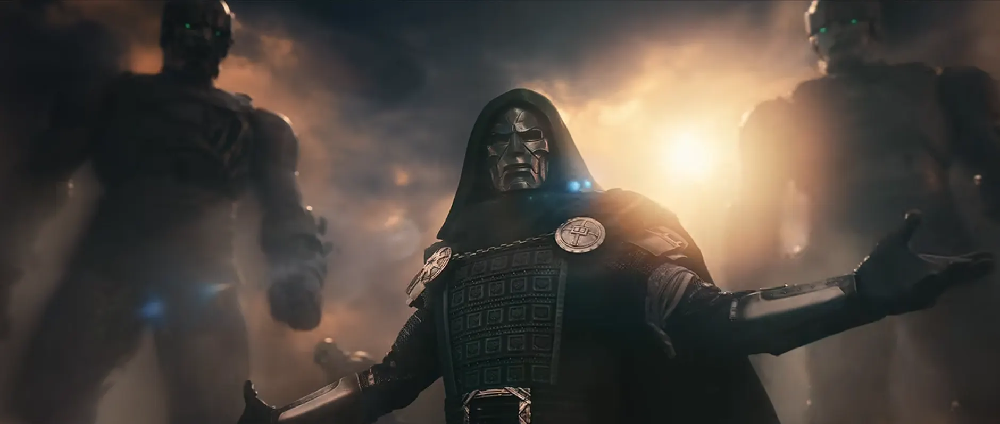

Tony Stark's
Journey
From a 1963 comic book to eleven films to a new mask: Tony Stark, told through his armor, his comics and the data around them.
Scroll to charge the reactor
Born in a 1963 comic, during the Vietnam War.
Stan Lee, Larry Lieber, Don Heck and Jack Kirby introduced Tony Stark in Tales of Suspense #39, cover-dated March 1963. He has been in Marvel comics every decade since.
It started with a box of scraps.
In 2008 the MCU retells the origin. A convoy ambush in Afghanistan leaves shrapnel in Tony's chest and a terrorist cell demanding a Jericho missile.
He builds something else. A miniature arc reactor keeps the shrapnel out of his heart and powers the Mark I, the first armor in our dataset and the baseline for every comparison that follows.
The suit dataset values the Mark I at $0 because it was built from scrap.


Every suit, wired into one reactor.
Every armor Tony wore, on screen and in the main comics. The right half is the MCU, the left half the comics. The outer ring holds each side's 12 most-seen armors, sized by how often they appear; the inner ring holds the rest. The broken arcs outside are armors he built for someone else.
Sweep across the reactor, tap, or focus it and use the arrow keys to pull an armor out.
35 armors in eight months.
After the Battle of New York, Tony stops sleeping. Marks 8 through 42 were all built between May and December 2012. The timeline zooms into that window so the burst is readable.
The strip underneath adds a second dataset, worldwide box office for each film Tony appears in, on the same time axis.
Suits use in-universe build dates. Films use real-world release dates. Inside the shaded window, horizontal position is not a date: the dataset only says "May–Dec 2012".


– Tonys, one loom.
The threads behind this page are not decoration. Each one is a Tony Stark: every version of him the Marvel Database lists, from the 1963 original to cartoons, films and what-if worlds. Here they run through the loom from left to right, by year.
A thread is bright in the years that Tony appears. Each gate closes an era, and its size is the number of Tonys seen in it. Click a thread to light it and read that life. Hover to see which Tony it is.
Source: Marvel Database, every character page titled "Anthony Stark (…)", fetched –. Years are comic cover dates, or release years for episodes and films. After the last gate the threads turn Doom green: that part is the story's ending, not data.


The last armor held the Infinity Stones.
The Mark 85 is the most expensive armor in the dataset, built with nanotech that reforms into whatever the fight needs. In Avengers: Endgame its gauntlet takes the Infinity Stones from Thanos.
The man who started by building weapons ends by spending his own life to stop one.

"I am Iron Man."

Robert Downey Jr. returns, as Victor von Doom.
At San Diego Comic-Con in July 2024, Marvel Studios announced Downey as Doctor Doom in Avengers: Doomsday. It is a new character for the actor, not a return of Tony Stark. Our story ends where his armor does.
Dec 18, 2026 release
Where every number comes from.
Views
- Comics issues per yearBUILT
- Armory Rings (every armor)BUILT
- Zoomed suit timeline + box officeBUILT
- Temporal Loom (variants)BUILT
- Mark 85 exploded scanREBUILD
Datasets
- MCU Iron Man Suits (Kaggle)
- Marvel Database comic appearances (CC BY-SA)
- Marvel Database Tony Stark variant pages (CC BY-SA)
- FiveThirtyEight comic characters (CC BY 4.0)
- Wikidata films, box office, media (CC0)
- IMDb ratings (non-commercial)
Caveats
- Suit values are fan estimates of fictional prices.
- 35 suits share one build interval (May–Dec 2012).
- Film stills © Marvel Studios, via the MCU Wiki, used for a non-commercial class project.